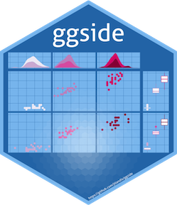

ggside 
Overview
The R package ggside expands on the ggplot2 package. This package allows the user to add graphical information about one of the main panel’s axis. This is particularly useful for metadata for discrete axis, or summary graphics on a continuous axis such as a boxplot or a density distribution.
Installation
Please install from CRAN for the latest stable version of ggside. You can also install from the Github as seen below.
#CRAN
utils::install.packages("ggside")
#Github
devtools::install_github("jtlandis/ggside")Usage
Using this package is similar to adding any additional layer to a ggplot. All geometries supported by ggside follow a pattern like geom_xside* or geom_yside* which will add that geometry to either the x side panel or the y side panel respectively. If you add geom_xsidedensity to a plot, then this places a density geometry in its own panel that is positioned by default above the main panel. This panel will share the same x axis of the main panel but will have an independent y axis. Take the following example from the ggplot2 readme.
library(ggplot2)
library(ggside)
ggplot(mpg, aes(displ, hwy, colour = class)) +
geom_point(size = 2) +
geom_xsidedensity(aes(y = after_stat(density)), position = "stack") +
geom_ysidedensity(aes(x = after_stat(density)), position = "stack") +
theme(axis.text.x = element_text(angle = 90, vjust = .5))
After version 0.3.0 you no longer need to use scale_(y|x)side(x|y)_*() to mix discrete and continuous axes. ggside geom’s have their default positional aesthetics x and y aesthetics to be prepended with ysidex and xsidey respectively under the hood. Now you may mix discrete and continuous axes with ease.
ggplot(mpg, aes(displ, hwy, colour = class)) +
geom_point(size = 2) +
geom_xsideboxplot(aes(y =class), orientation = "y") +
geom_ysidedensity(aes(x = after_stat(density)), position = "stack") +
scale_ysidex_continuous(guide = guide_axis(angle = 90), minor_breaks = NULL) +
theme(ggside.panel.scale = .3)
With version 0.2.0, more theme elements allow for better control over how side panels are rendered.
ggplot(iris, aes(Sepal.Width, Sepal.Length, fill = Species)) +
geom_point(aes(color = Species)) +
geom_xsidedensity(alpha = .3, position = "stack") +
geom_ysideboxplot(aes(x = Species), orientation = "x") +
scale_ysidex_discrete(guide = guide_axis(angle = 45)) +
theme_dark() +
theme(ggside.panel.scale = .3,
ggside.panel.border = element_rect(NA, "red", linewidth = 2),
ggside.panel.grid = element_line("black", linewidth = .1, linetype = "dotted"),
ggside.panel.background = element_blank()) +
guides(color = "none", fill = "none")
For a more detailed guide please see vignette('ggside_basic_usage') for more information.
Issues and Bug Reporting
If you find any issues or want to suggest an enhancement, please make a post at jtlandis/ggside.